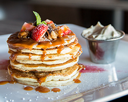
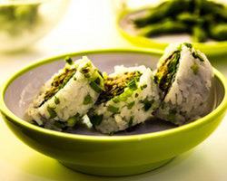
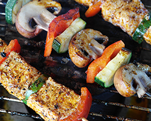
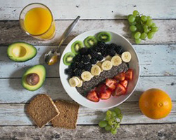

Tastemakers
Tastemakers Blog
Blog The A-list
The A-list Contribute
Contribute About
About
Share your Food Sense
Submit your favorite recipes, become a contributor, or get interviewed.

Sign up for our newsletter to receive a handpicked selection of the best stories, recipes, and news, delivered weekly to your inbox.
-

2012’s Best Summer Cookbooks
With the best of the season coming from “orchards, farms and gardens,” NPR has put together an impressive collection of 10 summer cookbooks.
-

2012’s Best Summer Cookbooks
With the best of the season coming from “orchards, farms and gardens,” NPR has put together an impressive collection of 10 summer cookbooks.
-

2012’s Best Summer Cookbooks
With the best of the season coming from “orchards, farms and gardens,” NPR has put together an impressive collection of 10 summer cookbooks.
-

2012’s Best Summer Cookbooks
With the best of the season coming from “orchards, farms and gardens,” NPR has put together an impressive collection of 10 summer cookbooks.